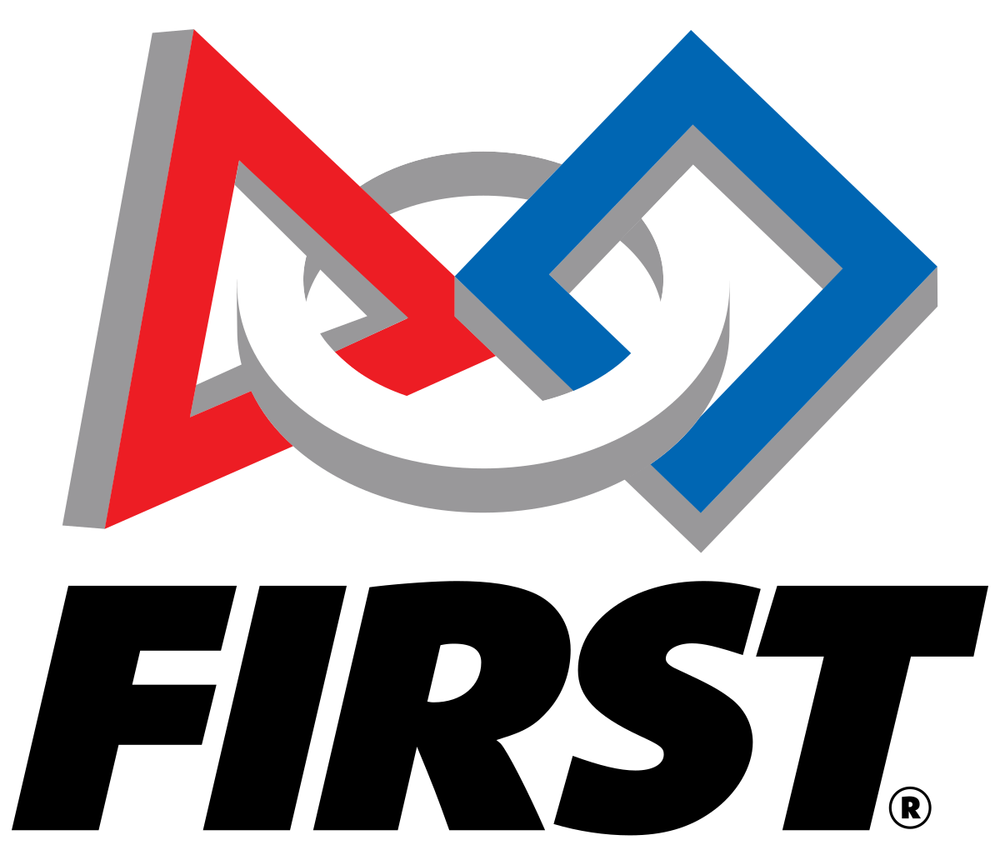

Euclid’s Engineers
FTC Team 31683
FTC Team 31683 • Grades 7–8 • Building the next generation of engineers
Learn MoreFIRST Tech Challenge (FTC) is a competitive robotics program where middle school students design, build, and program robots to complete challenges on a playing field. Teams learn engineering principles, coding, teamwork, and problem solving in a hands-on, exciting environment.

Euclid’s Engineers is the middle school robotics team at Karl G. Maeser Preparatory Academy. As FTC Team 31683, our students collaborate to design robots, write code, and compete in FIRST Tech Challenge competitions. We emphasize learning, creativity, leadership, and confidence while preparing students for future STEM opportunities.
Mechanical design, prototyping, CAD concepts, and iterative problem solving.
Java-based robot code, sensors, autonomous routines, and debugging skills.
Collaboration, communication, time management, and competition strategy.
Euclid’s Engineers serves as the foundation for students who later join Socratic Schematics (FRC Team 8885). FTC builds the technical skills, confidence, and mindset needed to succeed at the high school level.
FTC is where curiosity turns into capability. Students don’t just learn engineering, they become engineers.